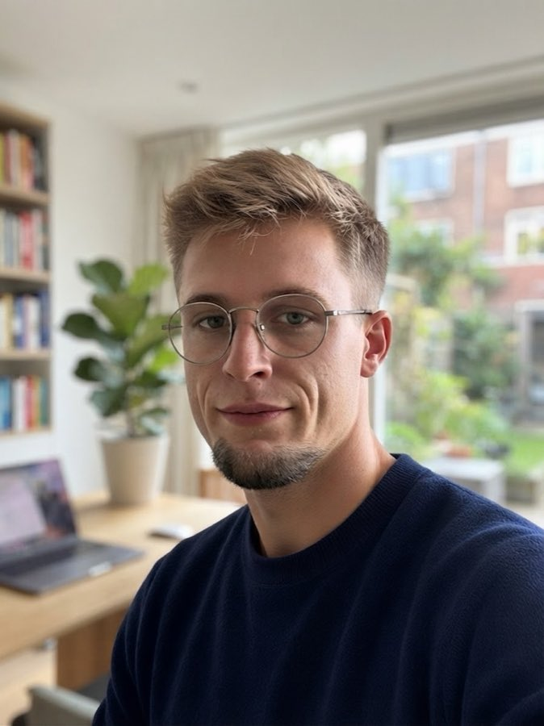

Integrative Psychotherapie für Erwachsene: wissenschaftlich fundiert, persönlich und auf Ihre Lebenssituation abgestimmt. In einem geschützten Rahmen finden wir gemeinsam Wege aus dem, was Sie belastet.
In der Therapie schaue ich nicht nur auf das Symptom, sondern auf den Menschen dahinter, auf Ihre Geschichte, Ihren Körper und das, was Sie gerade brauchen. Getragen wird diese Arbeit von einer Beziehung, in der Sie sich sicher fühlen können: offen, respektvoll und mit fachlicher Sorgfalt.

Ich bin Felix Mai, approbierter Psychotherapeut. Studiert habe ich an der HMU, Health and Medical University Potsdam (B. Sc. Psychologie, M. Sc. Psychotherapie), klinische Erfahrung habe ich unter anderem in der Oberberg Fachklinik gesammelt.
Integrative Psychotherapie verbindet wirksame Methoden aus verschiedenen anerkannten Therapieverfahren. Denn jedes Verfahren betrachtet ein Problem aus einer eigenen Perspektive, und manchmal ist die eine hilfreicher als die andere: Ein Anliegen lässt sich mal besser über Gedanken und Verhalten verstehen, mal über die Lebensgeschichte oder die Beziehungen, in denen es entstanden ist.
Am Anfang steht deshalb immer die Frage, was Sie brauchen. Daraus entsteht ein Weg, der zu Ihnen passt, der neben dem Gespräch auch den Körper und die seelische Dimension bewusst einbezieht.
Sie schreiben mir eine kurze Nachricht oder rufen an, unverbindlich und vertraulich. Ich melde mich zeitnah bei Ihnen zurück.
Wir lernen uns kennen, klären Ihr Anliegen und Ihre Fragen und prüfen gemeinsam, ob die Zusammenarbeit für Sie passt.
In regelmäßigen Sitzungen arbeiten wir an Ihren Zielen: in Ihrem Tempo, mit offenem Blick auf das, was sich verändert.
„Wenn wir unser Herz wieder hören,Felix Mai
findet vieles von selbst seinen Platz.“
Sie müssen nicht warten, bis es nicht mehr geht. Schreiben Sie mir, ich melde mich zeitnah bei Ihnen zurück. Alle Anfragen werden selbstverständlich vertraulich behandelt.
In akuten Krisen wenden Sie sich bitte an den Notruf 112 oder die Telefonseelsorge unter 0800 111 0 111 (kostenfrei, rund um die Uhr).